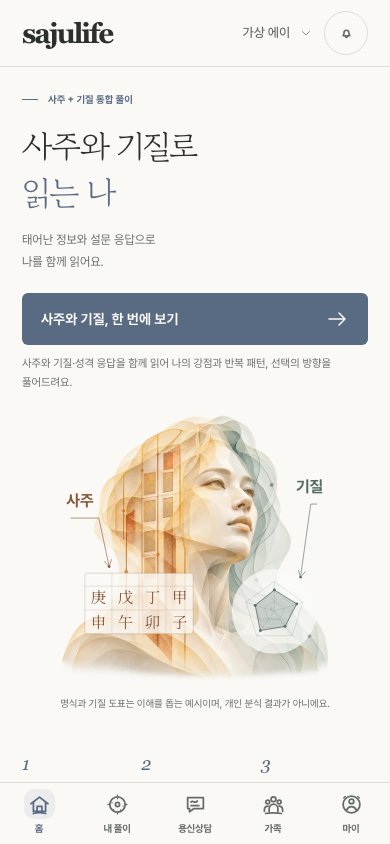

A는 현재 서비스 그대로.
B는 캐릭터 중심으로 전체 화면 개편.
실제 앱의 같은 기능과 데이터를 두 디자인으로 확인합니다. 로그인 전 흰 바탕·검정 궁서 화면은 공통 유지합니다.
실제 서비스에서 A/B 선택하기 ↗
캐릭터 B 바로 열기 ↗
B 전체 화면 한눈에 보기 ↗
화면
홈
사주 입력
기질 검사
사주 풀이
통합 풀이
용신상담
가족
마이
모바일
PC
TYPE A · 현재 실제 서비스
기존 제목·표면·배치·기능 보존

TYPE B · 캐릭터 중심 개편
홈부터 입력·검사·풀이·상담까지 같은 두 인물